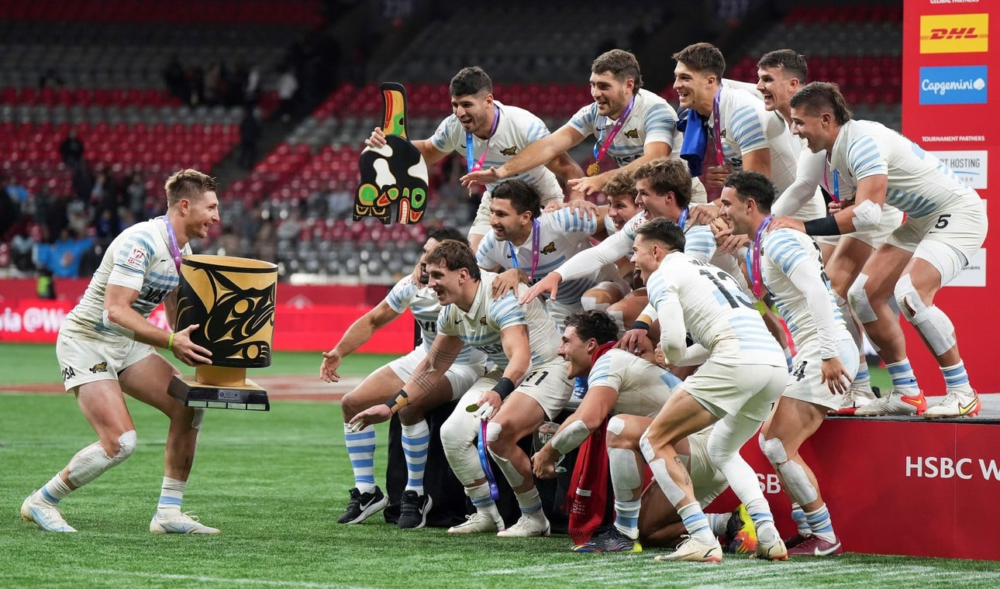

El Uno x Uno del plantel de Los Pumas 7's que salió campeón en Canadá
Luego de la consagración en Vancouver contra Francia, en Olé repasamos los 12 jugadores que hicieron historia en el Circuito Mundial.
El domingo 5 de marzo de 2023 quedará grabado a fuego para la historia de Los Pumas 7's. Es que no solo consiguieron un hito histórico al consagrarse por segundo año seguido en el seven de Vancouver (le ganaron la final a Francia por 33-21), sino que también lograron su segunda copa en la temporada (Hamilton, Nueva Zelanda, la anterior), algo que no había sucedido hasta el momento. En efecto, en Olé repasamos los 12 jugadores del plantel dirigido por Santiago Gómez Cora, que tocaron la gloria y que sueñan con ser los ganadores del Circuito Mundial.
El Uno x Uno del plantel de Los Pumas 7's campeón en Canadá
Luciano González: riojano de 25 años, inició su carrera en el Club Social de La Rioja e integra la Selección Argentina de Seven desde 2017. Fue parte del plantel que ganó la medalla de bronce en Tokio y ya superó los 100 tries (104) con la camiseta celeste y blanca. Siempre va para adelante como una topadora. Suma 225 caps.
Rodrigo Isgró: mendocino de 23 años, es una pieza fundamental en las salidas del equipo, puesto que cuenta con una destreza en el juego aéreo. Clave tanto para el ataque, como especialmente para la defender. De hecho, suele pescar muchas pelotas en el ruck. Después de su participación en Canadá, alcanzó los 98 caps y los 37 tries apoyados en el in-goal contrario.
Agustín Fraga: formado en el Club Ciudad de Buenos Aires y en CUBA, el jugador de 21 años acumula 75 caps desde su debut en febrero de 2022. Suele ser otro de los tryman nacionales (29).
Santiago Álvarez Fourcade: uno de los más experimentados del plantel. El bahiense de 29 años participó en dos Juegos Olímpicos: Río de Janeiro y Tokio. El año pasado sufrió una rotura ligamentos cruzados anterior de la rodilla derecha y recién regresó a la competencia en la actual temporada.
Matías Osadczuk: formado en SITAS, Tute (25 años) también fue parte del bronce olímpico y se ganó el premio a rookie en la temporada 2017. En 2020 culminó la campaña como el máximo anotador de tries del Circuito Mundial. Es el actual capitán del seleccionado y levantó el trofeo a lo Messi en Qatar. Lleva 176 caps y 472 puntos.
Marcos Moneta: de 22 años, está considerado el mejor jugador de seven del mundo. Desequilibrante con su velocidad, marca la diferencia cada vez que tira la pelota larga y corre al espacio. En la consagración en Vancouver apoyó la ovalada en el in-goal en seis oportunidades (una en la final). Acumula 90 caps con la Selección y se perdió el último Mundial de Ciudad del Cabo.
Joaquín Pellandini: fue uno de los últimos en sumarse al grupo comandado por Santiago Gómez Cora. Tanto es así que apenas participó de 33 caps. Zurdo de 23 años, se encarga de las conversiones. Además, es Licenciado en Economia Empresarial recibido en la Universidad Torcuato Di Tella y cuenta con un emprendimiento de ropa urbana.
Mateo Graziano: de los más jóvenes del plantel. Con 21 años y 195 centímetros de altura, surgió de las inferiores de Los Matreros. Fue Pumita y participó del conjunto campeón de seven en los Juegos Olímpicos de la Juventud de Buenos Aires 2018.
Tomás Elizalde: formado en Tigres Rugby Club, el back salteño de 22 años jugó 22 caps y anotó 20 puntos en el Circuito.
Tobías Wade: apertura de Alumni, tiene 23 años y acumula 66 caps y 14 tries con la Selección. Siempre es una rueda de auxilio para el entrenador.
Franco Rossetto: el más chico de todos. Con 19 años, el paranaense suele ingresar como medio scrum al equipo. Además, se hace cargo de los drops de conversión, cuando Pellandini no se encuentra en el terreno de juego.